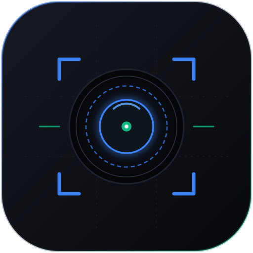

Align Camera
v1.0.0-build.353 iOS 17.0+Ứng dụng máy ảnh thông minh tích hợp mô hình YOLOv26 chạy thuần trên chip Apple Neural Engine (ANE). Tự động canh góc, căn khung hình chuẩn tỷ lệ vàng và nhận diện đối tượng theo thời gian thực với độ trễ siêu thấp.
Interface Decoded
Phân tích kiến trúc khung nhìn, cơ chế xử lý hình ảnh và hệ thống điều khiển thông minh của Align Camera.
Chế độ Khung nhìn Thông minh (Smart Viewfinder)
ACTIVE HUDKhung ngắm hiển thị hộp nhận diện thời gian thực (Bounding Box), lưới tỷ lệ vàng (Rule of Thirds) và thanh đo độ cân bằng đường chân trời tự động căn chỉnh đối tượng người, khuôn mặt và thú cưng.
Chế độ Đóng băng Tiết kiệm Pin (Hibernation Standby)
STANDBY MODEKhi không có chuyển động hoặc người dùng tạm dừng tác nghiệp, màn hình chuyển sang chế độ Standby với logo tách nền tinh tế, hỗ trợ chạm chuyển đổi Nền Đen / Nền Trắng và ngắt camera sensor để làm mát máy tối đa.
Capability Map
Các công nghệ xử lý đồ họa và trí tuệ nhân tạo được xây dựng chuyên biệt cho hệ sinh thái Apple Silicon.
YOLOv26 Apple Neural Engine Engine
Tối ưu hóa 100% các lớp mạng nơ-ron để thực thi trực tiếp trên vi xử lý ANE từ chip A12 đến A18 Pro.
NMS-Free Pipeline Không Nghẽn CPU
Loại bỏ thuật toán Non-Maximum Suppression trên CPU, trả về trực tiếp tọa độ chuẩn hóa giúp loại bỏ hiện tượng tụt khung hình.
Bộ lọc Màu Điện ảnh Cinematic LUTs
Tích hợp các bộ preset chuyển màu điện ảnh và tinh chỉnh độ phơi sáng, tương phản mượt mà.
Tự động Cắt Cúp & Zoom Mượt
Thuật toán bám đuổi tâm đối tượng (Subject Tracking) với chuyển động camera mượt (Smooth Easing Camera Pan).
Biểu tượng Thích ứng iOS 18 (Adaptive App Icon)
Hỗ trợ đầy đủ chế độ Light, Dark tự động ăn khớp với hệ thống Dark Platter của Apple, và chế độ Tinted nhuộm màu linh hoạt.
Đóng gói Sideload Độc lập
Định dạng tệp unsigned IPA hoàn chỉnh, không kèm mã theo dõi, không quảng cáo, tương thích hoàn hảo với Sideloadly và TrollStore.
Technical FAQ
Giải đáp các thắc mắc chuyên sâu về kiến trúc thực thi trên thiết bị, cơ chế sideload và tính tương thích phần cứng.
Tải về Bản phát hành Mới nhất
Tệp cài đặt: AISmartFramingCamera.ipa (239.3 MB) • v1.0.0-build.353